Cryptocurrencies & Blockchain Technology
- Cryptography
- Elliptic Curve Cryptography
- Base58 Encoding and WIF Format
- Bitcoin Keys and Addresses
- Cryptocurrency Wallets
- Advanced Keys and Addresses
- Transaction Chains and UTXOs
- Locking/Unlocking Scripts and Script Language
- Standard Transactions
- The Bitcoin Network
- The Blockchain
- Mining and Consensus
Cryptography
[Hide]- Symmetric encryption requires both parties (the sender and the receiver) to have access to the same key. So, the recepient needs to have the key before the message is decrypted. This works best for closed systems, which have less risk of a third-party intrusion. Symmetric encryption is faster than asymmetric encryption, but the limit is that both parties must securely store their keys before any message is sent.
- AES (Advanced Encryption System) is one of the most secure and widely used encryption types, used by governments and businesses. It encrypts data in blocks, splitting up the plaintext into certain blocks, encrypting them separately. Additionally, each encryption method has a different number of rounds of encryption.
- AES-128 encrypts blocks of a 128-bit size with 10 rounds
- AES-192 encrypts blocks of a 192-bit size
- AES-256 encrypts blocks of a 256-bit size with 14 rounds
- DES (Data Encryption Standard) was the accepted standard of encryption in the 1970s but is considered unsafe on its own. It encrypts 56 bits of data in a block, i.e. a block/key length of 56 bits.
- 3DES/TDEA (Triple Data Encryption Algorithm) is an upgraded version of DES used today, which uses three separate 56-bit keys for triple protection. The shorter block lengths are encrypted three times, but newer forms may take over soon.
- AES (Advanced Encryption System) is one of the most secure and widely used encryption types, used by governments and businesses. It encrypts data in blocks, splitting up the plaintext into certain blocks, encrypting them separately. Additionally, each encryption method has a different number of rounds of encryption.
- Asymmetric encryption, also called public-private key encryption, uses two keys for the encryption process, a public-private key pair (public, private). If user A, with pair
(g, g')
, wants to send user B, with pair(f, f')
, a message M, A can take B's public key and encrypt the message to get the ciphertextf(M)
. They can send this encrypted message over the internet to B, where B will use their own private key to decrypt the message to getf'(f(M))
. Mathematically speaking, letting T be the set of all strings, the public keyf: T → T
is a mapping that encrypts a message into a jumble of characters, known to the world, while the private keyf': T → T
is precisely the inverse off
. Usually,f'
is almost impossibly hard to compute, which is what makes asymmetric encryption so secure. Even though public-key encryption is slower, it has the huge advantage of allowing any two parties to communicate to each other, without the need to exchange keys in advance.- RSA (Ron Rivest, Adi Shamir, Leonard Adleman) takes advantage of the mathematical fact that it is easy to multiply 2 large prime numbers together, but it is not easy to factor a large number into two prime numbers (by large we're talking on the order of hundreds of digits). The math behind RSA is here. It is extremely secure, with an estimated breaking time of thousands or millions of years before an RSA encryption is brute-force cracked. Another great advantage of RSA is its scalability, coming with various encryption key lengths such as 768-bit, 1024-bit, 2048-bit, 4096-bit, etc., but it is not practical for large or numerous files due to speed.
- ECC (Elliptic Curve Cryptography) is based on the algebraic structure of elliptic curves over finite fields. It also works on the principle of irreversibility (easy to compute in one direction but painfully difficult to reverse it). More specifically, the security of ECC depends on the ability to compute a point multiplication and the inability to compute the multiplicand given the original and product points. The size of the elliptic curve, measured by the total number of discrete integer pairs staisfying the curve equation, determines the difficulty of the problem.
- Another type of encryption used is called the cryptographic hash function, which is an algorithm that takes an arbitrary amount of data input and produces a fixed-size output of enciphered text called a hash value, or hash. It is extremely hard to decode, so it is mainly used as a one-way encryption.
- MD5 (Message Digest 5) creates 128-bit outputs but is an outdated method.
- SHA-1 is the second version of the Secure Hash Algorithm, after SHA-0. SHA-1 creates 160-bit outputs and replaced MD5.
- SHA-2 is a suite of hashing algorithms much more secure than SHA-1 algorithms, with each algorithm represented by the length of its output.
- SHA-224 creates 224-bit outputs.
- SHA-256 creates 256-bit outputs.
- SHA-384 creates 384-bit outputs.
- SHA-512 creates 512-bit outputs.
- LANMAN (LAN manager) is the Microsoft LAN Manager hashing algorithm, used by legacy Windows systems, but due to weaknesses, it is not used today.
- NTLM (NT LAN Manager algorithm) is used to password hashing during authentication and is the successor of the LANMAN algorithm.
N
to B by encryptingN
with B's public key to getf(N)
. B has no way to know whetherf(N)
orf(M)
is the correct one. In order to verify the identity of the sender, digital signatures come into play. In order for A to prove the authenticity of the messageM
(or to be exact, the encrypted messagef(M)
), A must digitally sign the document/message. First, A uses a hash functionH
to generate the encrypted version of the message, gettingH(f(M))
(this hash function is well known). Now, this is further encrypted using the A's private keyg'
to produceg'(H(f(M)))
. This is appended to the document and sent to B with A's public key as a triplet(f(M), g'(H(f(M))), g)
. B, upon receiving this triplet, has everything they need to verify the sender's identity.- B first takes the well known hash function
H
and computesH(f(M))
himself. - B takes the string
g'(H(f(M))
and decrypts it using the public keyg
to getg(g'(H(f(M))) = H(f(M))
- If the two values match, then B can verify that the sender who has that public key
g
also has the correct private keyg'
, and is therefore user A.
(k, k')
.- C can send the key triple using their own public key as
(f(M), k'(H(f(M))), k)
. Certainly, the hash functions will match sinceH(f(M)) = k(k'(H(f(M))))
, but B can clearly see that the public key received isk
, and notg
like it's supposed to be. - C can try sending the public key as
g
(since A's public keyg
is open to everyone) to send the triple(f(M), k'(H(f(M))), g)
. However, B would find out thatH(f(M)) != g(k'(H(f(M))))
, and so the hashes don't match.
g'
secure. If user C had access tog'
, then this entire security system is compromised. In other words, two separate entities in posession of the same key-pair are indistinguishable within the network.Elliptic Curve Cryptography
[Hide]a, b ∈ ℝ
, the logarithmlogba
is a numberx
such that thatbx = a
. Analogously, in any algebraic groupG
, powersbk
can be defined for all integersk
, and the discrete logarithmlogba
is an integerk
such thatbk=a
. Discrete logarithms are quickly computable in a few special cases, but no efficient method is known for computing them in general. For our purposes, we can define an elliptic curve as a plane curve over a finite field which consists of the points satisfying the equationy2 = x3 + ax + b
along with a distinguished point at infinity, denoted ∞. The coordinates here are chosen from a fixed finite field of characteristic not equal to2
or3
. This set together with the group operation of elliptic curves (described here and more informally below) is an abelian group, with the point at infinity as an identity element. Bitcoin uses a specific elliptic curve and a set of mathematical constants, as defined in a standard calledsecp256k1, established by the National Institute of Standards and Technology (NIST). The secp256k1 curve defined by the following function
y2 = (x3 + 7) over 𝔽p × 𝔽p
ory2 mod p = (x3 + 7) mod p
wherep = 2256−232−29−28−27−26−24−1
, produces an elliptic curve that looks like the following. Note that it is a collection of points since the "curve" is embedded in a discrete field rather than a continuum. In actuality, the following visual is for whenp=17
.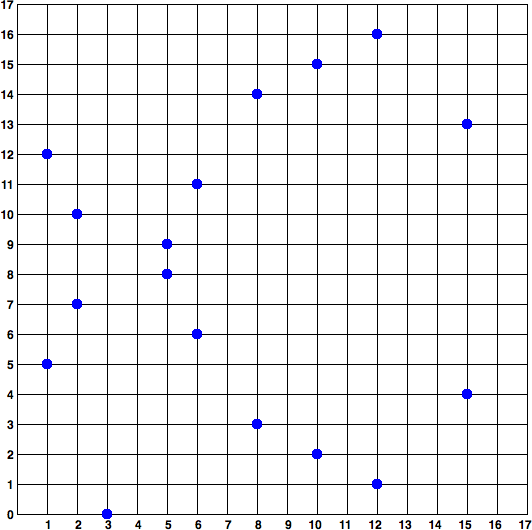
One solution is the point
x = 55066263022277343669578718895168534326250603453777594175500187360389116729240 y = 32670510020758816978083085130507043184471273380659243275938904335757337482424on a larger scale, the curve has more of a sense of randomness to it as we zoom out or embed it into different 2-manifolds.
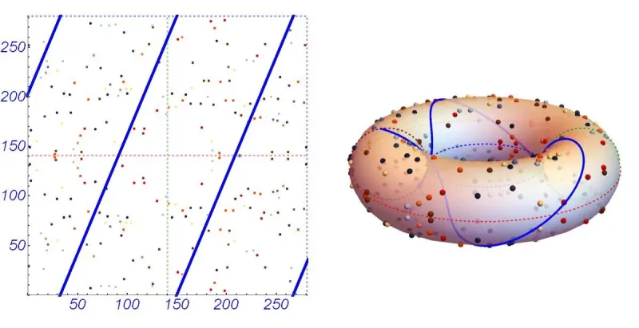
On this set of points on the elliptic curve, we can define an additive (group) operator
+
as such:- Given any two different points
P1, P2
on the elliptic curve, there is a third pointP3 = P1 + P2
on the elliptic curve. Geometrically, this third pointP3
is calculated by drawing a line betweenP1
andP2
, and this line will intersect the elliptic curve in exactly one additional place. Call this pointP3' = (x,y)
, and then reflect this in the x-axis to getP3=(x,-y)
. - If
P1=P2
, then the line drawn is merely just the tangent line of the extension of the curve into the real plane atP1
, and this line is guaranteed to intersect the curve in exactly one point. - If
P1
orP2
is the point at infinity, then it acts as the identity element. That is,P + ∞ = ∞ + P = P
kP = P + P + ... + P (k times)
It turns out that multiplying (i.e. repeatedly adding) is easy to do, but to go the other way around is notoriously hard.Base58 Encoding and WIF Format
[Hide]Base58Check has the following features:
- An arbitrarily sized input.
- A set of 58 alphanumeric symbols consisting of easily distinguished uppercase and lowercase letters (0O, lI) are not used. The alphabet is
123456789ABCDEFGHJKLMNPQRSTUVWXYZabcdefghijkmnopqrstuvwxyz
- Unlike a hash function, one can easily convert a number in any base from and to Base58Check.
- We determine a version prefix (in hex) for the payload that tells us what type of information it represents and attach the prefix onto the payload to get
Version Prefix + Payload
- We compute the checksum by taking the first four bytes (i.e. 8 hex digits) of the double-SHA of the Version Prefix + Payload and adding it to the end to get:
Version + Payload + Checksum = Version + Payload + SHA256(SHA256(Version Prefix + Payload))
- Then we convert the entire hex number into Base58, which has the alphabet ultimately producing
Base58(Version + A + Checksum)
| Type | Version Prefix (hex) | Base58 Result Prefix |
|---|---|---|
| Bitcoin Address | 0x00 | 1 |
| Pay-to-Script-Hash Address | 0x05 | 3 |
| Bitcoin Testnet Address | 0x6F | m or n |
| Private Key WIF | 0x80 | 5, K, or L |
| BIP38 Encrypted Private Key | 0x0142 | 6P |
| BIP32 Extended Public Key | 0x0488B21E | xpub |
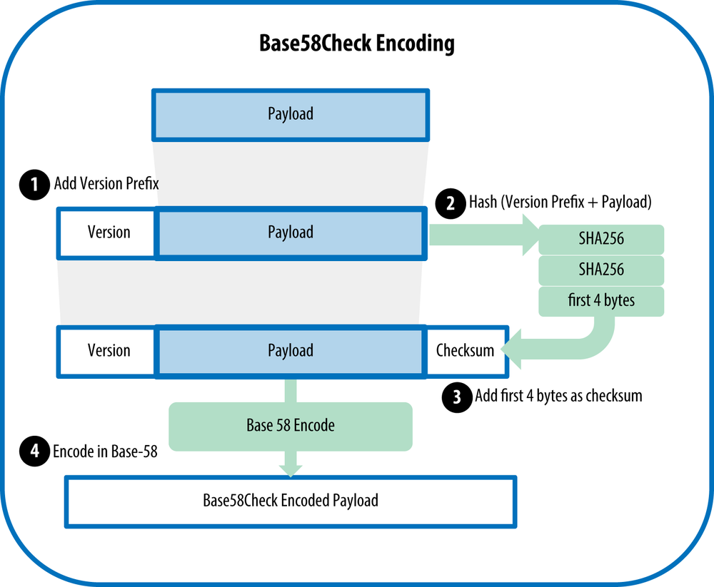
Bitcoin Keys and Addresses
[Hide]104.25.248.32. This was planned to be a convenient method to use Bitcoins without dealing with public keys and addresses. However, after realizing that this process was vulnerable to man-in-the-middle attacks, the option was disabled and newer forms of addresses came out.
Fundamentally, a Bitcoin wallet is basically a file that contains a public-private key pair
(K, k) following the Elliptic Curve Cryptography system. Our fundamental base will be in hexadecimal. Most generally, the steps are as such:
- The private key
kis a randomly generated 64-digit hexadecimal number (256-bits). It is stored in one of two main forms, with WIF-compressed being the more recently used form:- WIF-Uncompressed: Base58Check with a version prefix of
0x80, resulting in Base58 Result prefix of5. - WIF-Compressed: Base58Check with a version prefix of
0x10, resulting in Base58 Result prefix ofKorL.
- WIF-Uncompressed: Base58Check with a version prefix of
- The public key
Kcan easily be computed bykusing elliptic curve multiplicationK = k * G(which is irreversible), wherekis the private key,Gis a constant point(x0, y0)called the generator point (called this because it is the generating point of the entire group), andKis the resulting public key. Now, depending on which WIF form thatkis in,Kis stored in one of two ways. Note thatKis a pair of hexadecimal numbers.- If
kis WIF-Uncompressed, the pair of numbersK=(K1,K2)are simply concatenated with the prefix0404 + K1 + K2
- If k is WIF-Compressed, only the first number
K1is stored with the prefix being02ifK2is odd or03ifK2is even. This actually turns out to be a lossless form of compression, which is explained here.K2 even --> 02 + K1 K2 odd --> 03 + K1
- If
- The Bitcoin address A is derived from the public key through the use of one-way cryptographic hashing with the functions
SHA256andRIPEMD160. This composite function, calledSHA160, produces a 160-bit/20-byte number, i.e. a 40-digit hexadecimal. Note that the compressed and uncompressed forms produce different bitcoin addresses!A = RIPEMD160(SHA256(K)) = SHA160(K)
- This address A is almost always presented in WIF using Base58Check.
For bitcoin, the specific elliptic curve that is used is referred to as
secp256k1, and the generator/base point is always the same for all bitcoin addresses. It has hexadecimal coordinates:
x = 79BE667E F9DCBBAC 55A06295 CE870B07 029BFCDB 2DCE28D9 59F2815B 16F81798 y = 483ADA77 26A3C465 5DA4FBFC 0E1108A8 FD17B448 A6855419 9C47D08F FB10D4B8which in compressed form is
G = 02 79BE667E F9DCBBAC 55A06295 CE870B07 029BFCDB 2DCE28D9 59F2815B 16F81798and uncompressed form is
G = 04 79BE667E F9DCBBAC 55A06295 CE870B07 029BFCDB 2DCE28D9 59F2815B 16F81798 483ADA77 26A3C465 5DA4FBFC 0E1108A8 FD17B448 A6855419 9C47D08F FB10D4B8The diagram below shows a comprehensive outline of the key-producing processes, which has two paths (for when a WIF-uncompressed or a WIF-compressed private key is created).
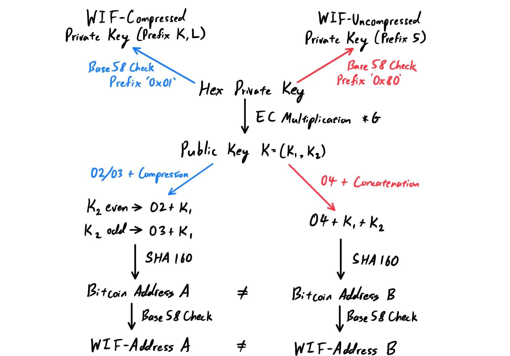
Cryptocurrency Wallets
[Hide]- Nondeterministic (Random) wallets are simply collections of randomly generated private keys, but they are cumbersome to manage, back up, and import, especially if you want to avoid address re-use because that means managing many keys, which creates the need for frequent backups.
- Deterministic (Seeded) wallets are wallets that contain private keys that are all derived from a common seed, through the use of a one-way hash function from a previous private key, linking them in sequence. As long as you can re-create that sequence, you only need the first key (known as the seed or master key) to generate them all. The seed is also sufficient for a wallet export or import, allowing for easy migration of all the user's keys between different wallet implementations.
Mnemonic Code Words
To make storing these words easier, we use mnemonic code words (a sequence of 12~24 English words) to encode the seed. The mnemonic code represents 128 to 256 bits, which are used to derive a longer (512-bit) seed through the use of the key-stretching functionPBKDF2. The resulting seed is used to create a deterministic wallet and all of its derived keys.
| 128-bit | 256-bit | |
|---|---|---|
| Entropy Input | 0c1e24e5917779d297e14d45f14e1a1a | 2041546864449caff939d32d574753fe684d3c947c3346713dd8423e74abcf8c |
| Mnemonic | army van defense carry jealous true garbage claim echo media make crunch | cake apple borrow silk endorse fitness top denial coil riot stay wolf luggage oxygen faint major edit measure invite love trap field dilemma oblige |
| Seed | 3338a6d2ee71c7f28eb5b882159634cd46a898463e9d2d0980f8e80dfbba5b0fa0291e5fb888a599b44b93187be6ee3ab5fd3ead7dd646341b2cdb8d08d13bf7 | 3972e432e99040f75ebe13a660110c3e29d131a2c808c7ee5f1631d0a977fcf473bee22fce540af281bf7cdeade0dd2c1c795bd02f1e4049e205a0158906c343 |
Hierarchical Deterministic Wallets (BIP0032/BIP0044)
The most advanced form of deterministic wallets is the hierarchical deterministic wallet, or HD wallet, defined by the BIP0032 standard. Hierarchical deterministic wallets contain keys derived in a tree structure, such that a parent key can derive a sequence of children keys, each of which can derive a sequence of grandchildren keys, and so on, to an infinite depth. This type of wallet is more specifically called a Type-2 HD wallet.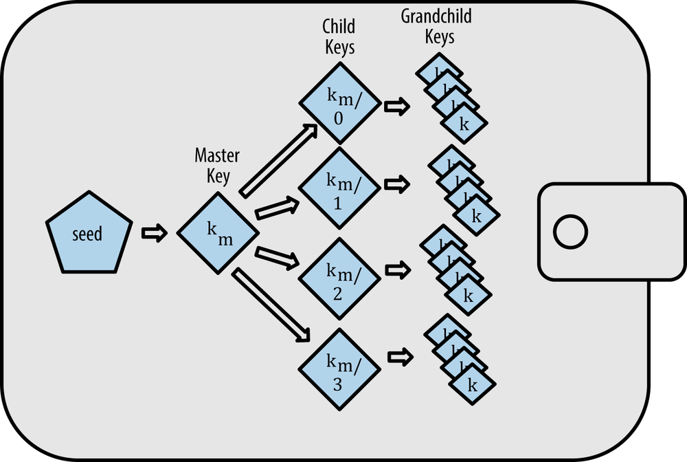
These wallets give both more of an organizational structure to the wallet. Additionally, users can create a sequence of public keys without having access to the corresponding private keys. This allows HD wallets to be used on an insecure server or in a receive-only capacity, issuing a different public key for each transaction.
HD wallets are created from a single root seed, which is a 128, 256, or 512-bit random number. The mnemonic code words are derived for the user to back up, and the root seed is inputted into the
HMAC-SHA512 algorithm to output the master private key m (which itself produces the master public key M using normal elliptic curve multiplication m*G) and a master chain code, which is used to introduce entropy in the function that creates child keys from parent keys. 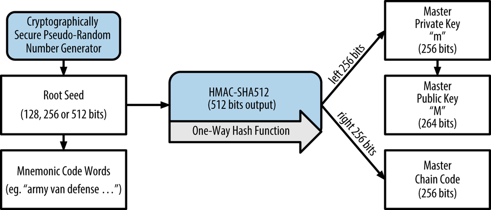
Hierarchical deterministic wallets use a child key derivation (CKD) function to derive children keys from parent keys. It takes in the inputs:
- A parent key, which could be private or public.
- A seed called a chain code (256 bits)
- An index number (32 bits) which represents the
i
th children of a parent (e.g. Child 0, Child 1, Child 2, etc.)
CKD where
CKD(parent key, parent chain code, index) = (child key, child chain code)Let us concentrate on the parent key input for the CKD function. One of the most important things about CKD is that it sufficies the commutative diagram below, where k represents a private key, K represents a public key, * represents the normal elliptic multiplication that generates a public from a private key, and
CKD
is the child key derivation function.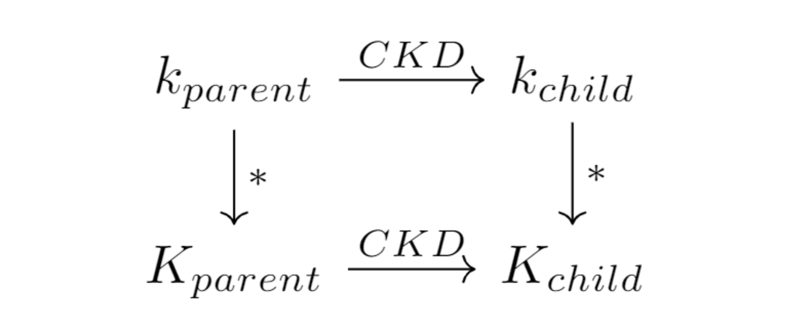
This means that inputting the private parent key will generate a private child key, and a public child key will generate a public child key. More specifically, there are two types of extended keys.
- An extended public key is the concatenation of a public key and a chain code, which is generated by inputting a parent public key, the chain code, and the index. Note that you can't generate any private keys with the extended public key; only public keys. This ability to derive public child keys from public parent keys without having the private keys is especially useful since it gives us two ways to derive a child public key:
- from the child private key, or
- directly from the parent public key
One common application of this solution is to install an extended public key on a web server that serves an ecommerce application. The web server can use the public key derivation function to create a new bitcoin address for every transaction (e.g., for a customer shopping cart). The web server will not have any private keys that would be vulnerable to theft. Another common application of this solution is for cold-storage or hardware wallets. In that scenario, the extended private key can be stored on a paper wallet or hardware device (such as a Trezor hardware wallet), while the extended public key can be kept online. - An extended private key is the concatenation of a private key and a chain code. This allows you to generate both the private and public keys of all future generations, giving you complete control of future wallets.
Extended Child Key Derivation - Non-Hardened Extended Private Key
The diagram below shows the generation of an extended child private key with an extended child private key. Let us walk through the steps:- The parent private key and the parent chain code are the inputs.
- The parent public key is generated through elliptic curve addition from the parent private key.
- An index between
0
and231−1
is chosen and concatenated to the public key. We now have the parent chain code and theparent public key + index
- The parent chain code and the parent
public key+indexis put in through theHMAC-SHA512function to generate a 512-bit output.- The new chain code is the last 256 bits of the result from the
HMAC. - The new private key is the first 256 bits of the result from the
HMACadded to the original private key. This essentially just takes the original private key and increases it by a random 32-byte number (mod whatever the order of the field in which the elliptic curve exists).
- The new chain code is the last 256 bits of the result from the
- Notice how even though the initial inputs are the parent private key and the parent chain code, the child chain code is really dependent upon the parent public key. Furthermore, the security of the child private key comes from adding the randomly-produced 32-byte number (produced by the parent public key and chain code) to the unknown parent private key.

Extended Child Key Derivation - Non-Hardened Extended Public Key
The diagram below shows the generation of an extended child public key with an extended child public key. This is really just a sub-diagram of the one above.- The parent public key and the parent chain code are the inputs.
- An index between
0
and231−1
is chosen and concatenated to the public key. We now have the parent chain code and theparent public key + index
- The parent chain code and the
parent public key+indexis put in through theHMAC-SHA512function to generate a 512-bit output.- The new chain code is the last 256 bits of the result from the
HMAC. - Note that a public key in ECC is realy a point
(x, y). We first take the first 256 bits from theHMAC, multiply it by the generator pointGto get some point in ℝ2, and finally use elliptic curve addition to get the pointParent Public Key + (First 256 bits of HMAC * G)
which is the new child public key.
- The new chain code is the last 256 bits of the result from the
A few more points to quickly hit:
- Child private keys are indistinguishable from nondeterministic random keys. Because the derivation function is a one-way function, the child key cannot be used to find a parent key nor any of its siblings since this requires you to backtrack across the hash function.
- The child private key alone can be used to make a public key and thus a bitcoin address. Then, it can be used to sign transactions to spend anything paid to that address, which is still a lot of power. The lack of the chain code just restricts you from making new keys.
- A child private key, the corresponding public key, and the bitcoin address are all indistinguishable from keys and addresses created randomly. The fact that they are part of a sequence is not visible, outside of the HD wallet function that created them. Once created, they operate exactly as “normal” keys.
- The initial chain code seed (at the root of the tree) is made from random data, while subsequent chain codes are derived from each parent chain code.
Extended Child Key Derivation - Hardened Extended Private Key
The ability to derive a branch of public keys from an extended public key is very useful, but it comes with a potential risk. Access to an extended public key does not give access to child private keys. However, because the extended public key contains the chain code, if a child private key is known, or somehow leaked, it can be used with the chain code to derive all the other child private keys. A single leaked child private key, together with a parent chain code, reveals all the private keys of all the children. Worse, the child private key together with a parent chain code (which can be found in the extended parent public key) can be used to deduce the parent private key, quite easily, in fact.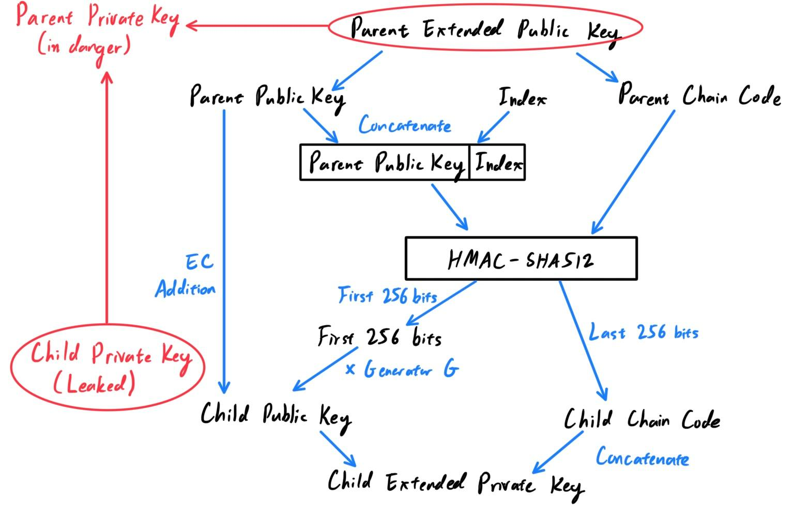
The risk is that with this information, a hostile party could have access one level up the wallet tree (but not beyond), allowing outsiders to spend the bitcoins at will. To prevent this, HD wallets use an alternative derivation function called hardened derivation, which breaks the relationship between the parent public key and child chain code. The hardened derivation function uses the parent private key to derive the child chain code, instead of the parent public key. This creates a “firewall” in the parent/child sequence, with a chain code that cannot be used to compromise a parent or sibling private key.
The diagram below shows the generation of a hardened extended child private key with an extended child public key. This is really just a sub-diagram of the one above.
- The parent private key and the parent chain code are the inputs.
- An index between
231
and232−1
is chosen and concatenated to the private key (note that unlike the non-hardened version, we do not convert the private key into a public key first). We now have the parent chain code and theparent private key + index
- The
parent chain codeand theparent public key+indexis put in through theHMAC-SHA512function to generate a 512-bit output.- The new chain code is the last 256 bits of the result from the
HMAC. - The new private key is the first 256 bits of the result from the
HMACadded to the original private key. This again just takes the original private key and increases it by a random 256-bit number.
- The new chain code is the last 256 bits of the result from the
- Note that this hardened child key was constructed by putting the private key into the
HMACfunction (which an extended public key does not have access to), which means that child extended private keys derived this way will have a public key that cannot be derived by a corresponding extended public key.
When the hardened private derivation function is used, the resulting child private key and chain code are completely different from what would result from the normal derivation function. The resulting “branch” of keys can be used to produce extended public keys that are not vulnerable, because the chain code they contain cannot be exploited to reveal any private keys. Hardened derivation is therefore used to create a “gap” in the tree above the level where extended public keys are used. In simple terms, if you want to use the convenience of an extended public key to derive branches of public keys, without exposing yourself to the risk of a leaked chain code, you should derive it from a hardened parent, rather than a normal parent. As a best practice, the level-1 children of the master keys are always derived through the hardened derivation, to prevent compromise of the master keys.
The index number used in the derivation function is a 32-bit integer. To easily distinguish between keys derived through the normal derivation function versus keys derived through hardened derivation, this index number is split into two ranges. Index numbers between
0
and231−1
(0x0 to 0x7FFFFFFF) are used only for normal derivation. Index numbers between 231
and232−1
(0x80000000 to 0xFFFFFFFF) are used only for hardened derivation. Therefore, if the index number is less than 231
, that means the child is normal, whereas if the index number is equal or above231
, the child is hardened. More info about all this here and here.HD Wallet Key Identifier (Path)
Keys in an HD wallet are identified using a “path” naming convention, with each level of the tree separated by a slash/. Private keys derived from the master private key start with m. Public keys derived from the master public key start with M. Therefore, the first child private key of the master private key is m/0. The first child public key is M/0. The second grandchild of the first child is m/0/1, and so on.
The “ancestry” of a key is read from right to left, until you reach the master key from which it was derived. For example, identifier m/x/y/z describes the key that is the z
th child of keym/x/y, which is the y
th child of keym/x, which is the x
th child ofm. Some examples of paths are shown in the table.
| HD Path | Key Described |
|---|---|
| m/0 | The first (0) child private key from the master private key (m) |
| m/0/0 | The first grandchild private key of the first child (m/0) |
| m/0'/0 | The first normal grandchild of the first hardened child (m/0') |
| M/23/17/0/0 | The first great-great-grandchild public key of the first great-grandchild of the 18th grandchild of the 24th child |
The HD wallet tree structure offers tremendous flexibility. Each parent extended key can have 4 billion children: 2 billion normal children and 2 billion hardened children. Each of those children can have another 4 billion children, and so on. The tree can be as deep as you want, with an infinite number of generations. With all that flexibility, however, it becomes quite difficult to navigate this infinite tree. It is especially difficult to transfer HD wallets between implementations, because the possibilities for internal organization into branches and subbranches are endless. Two Bitcoin Improvement Proposals (BIPs) offer a solution to this complexity by creating some proposed standards for the structure of HD wallet trees, but we will not get into them here.
Advanced Keys and Addresses
[Hide]Encrypted Private Keys (BIP0038)
For more advanced security without expending too much accessibility, BIP0038 proposes a common standard for encrypting prive keys (based off of AES encryption) that uses an extra password to further encrypt a WIF-formatted private key. For example, the WIF-Uncompressed private key with a prefix of5 would be encrypted to a Base58Check-encoded encrypted private key with prefix 6P. Therefore, a key starting with 6P means that a password must be needed to decrypt it. The most common use case for BIP0038 encrypted keys is for paper wallets that can be used to back up private keys on a piece of paper. As long as the user selects a strong passphrase, a paper wallet with BIP0038 encrypted private keys is incredibly secure and a great way to create offline bitcoin storage (also known as “cold storage”).
Vanity Addresses
Vanity addresses are valid bitcoin addresses that contain human-readable messages. For example,1LoveBPzzD72PUXLzCkYAtGFYmK5vYNR33contains the letters forming the word "Love" as the first four Base58 letters. Vanity addresses require generating and testing billions of random candidate private keys, until one derives a bitcoin address with the desired pattern. Vanity addresses are no less or more secure than any other address. You can no more easily find the private key of an address starting with a vanity pattern than you can any other address. Looking at the pattern "KidsCharity", we can approximate how frequently we might find this pattern in a bitcoin address in the figure below. An average desktop PC without specialized hardware can search approximately 100,000 keys per second.
| Length | Pattern | Frequency | Average Search Time |
|---|---|---|---|
| 1 | 1K | 1 in 58 keys | 1 millisecond |
| 2 | 1Ki | 1 in 3,364 | 50 milliseconds |
| 3 | 1Kid | 1 in 195,000 | 2 seconds |
| 4 | 1Kids | 1 in 11 million | 1 minute |
| 5 | 1KidsC | 1 in 656 million | 1 hour |
| 6 | 1KidsCh | 1 in 38 billion | 2 days |
| 7 | 1KidsCha | 1 in 2.2 trillion | 3-4 months |
| 8 | 1KidsChar | 1 in 128 trillion | 13-18 years |
| 9 | 1KidsChari | 1 in 7 quadrillion | 800 years |
| 10 | 1KidsCharit | 1 in 400 quadrillion | 46,000 years |
| 11 | 1KidsCharity | 1 in 23 quintillion | 2.5 million years |
Paper Wallets
Paper wallets are basically bitcoin private keys printed on paper, effective for cold storage due to its immunity from hacking. Often the paper wallet also includes the corresponding bitcoin address for convenience, but this is not necessary because it can be derived from the private key. They can be generated in this website. The simplest form of a paper wallet is the table below.| Public Address | 1424C2F4bC9JidNjjTUZCbUxv6Sa1Mt62x |
|---|---|
| Private Key (WIF) | 5J3mBbAH58CpQ3Y5RNJpUKPE62SQ5tfcvU2JpbnkeyhfsYB1Jcn |
Transaction Chains and UTXOs
[Hide]| Size | Field | Description |
|---|---|---|
| 4 bytes | Version | Specifies which rules this transaction follows |
| 1~9 bytes (VarInt) | Input Counter | How many inputs are included |
| Variable | Inputs | One or more transaction inputs |
| 1~9 bytes (VarInt) | Output Counter | How many outputs are included |
| Variable | Outputs | One or more transaction outputs |
| 4 bytes | Locktime | A timestamp or block number that defines the earliest time that a transaction can be added to the blockchain, usually set to 0 to indicate immediate execution. If locktime is nonzero and below 500 million, it is interpreted as a block height, meaning the transaction is not included in the blockchain prior to the specified block height. If it is above 500 million, it is interpreted as a Unix Epoch timestamp (seconds since Jan-1-1970) and the transaction is not included in the blockchain prior to the specified time. |
Unspent transaction outputs, or UTXOs, are indivisible chunks of bitcoin currency locked to a specific owner, recorded on the blockchain, and recognized as currency units by the entire network. The bitcoin network tracks all available (unspent) UTXO currently numbering in the millions, with each user's bitcoin scattered as UTXO amongst hundreds of transactions and hundreds of blocks. In effect, there is no such thing as a stored balance of a bitcoin address or account; there are only scattered UTXO, locked to specific owners. Note that even though UTXOs can be any arbitrary value, once created it is indivisible just like a coin that cannot be cut in half. If a UTXO is larger than the desired value of a transaction, it must still be consumed in its entirety and change must be generated in the transaction. For example, if you have a 20 BTC UTXO and want to pay 1 bitcoin, your transaction must consume the entire 20 bitcoin UTXO and produce two outputs: one paying 1 bitcoin to your desired recipient and another paying 19 bitcoin in change back to your wallet. All this is automatically done by your bitcoin wallet. The diagram shows a sequence of (three) transactions.
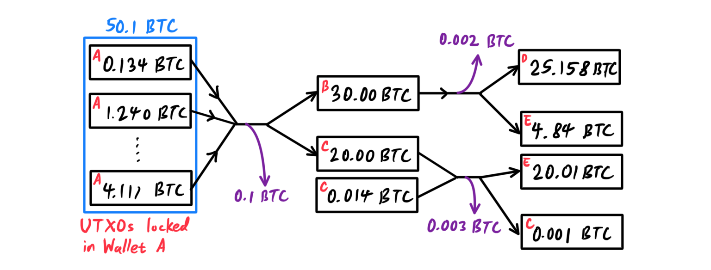
The misleading concept of a user's bitcoin balance is derived from the use of the bitcoin wallet, but it is really the case that the wallet calculates the user's balance by scanning the blockchain and aggregating all UTXOs belonging to that user. This system allows chunks of bitcoin to move from owner to owner in a chain of transactions consuming and creating UTXO. Transactions consume UTXO by unlocking it with a signature of the current owner and create UTXO by locking it to the bitcoin address of the new owner. The exception to the output and input chain is a special type of transaction called the coinbase transaction, which is the first transaction in each block. This transaction is placed there by the “winning” miner and creates brand-new bitcoin payable to that miner as a reward for mining. This is how bitcoin’s money supply is created during the mining process.
Transaction Fees
Furthermore, transaction fees exist, which serve as an incentive to include (mine) a transaction into the next block and also as a disincentive as "spam" transactions of any kind of abuse of the system, by imposing a small cost on every transaction. Transaction fees are calculated based on the size of the transaction in kilobytes (by multiplying the size of the transaction in kb by the per kilobyte fee), not the value of the transaction in bitcoin and are collected by the miner who mines the block that records the transaction on the blockchain. Miners prioritize transactions based on many different criteria, including fees, and might even process transactions for free under certain circumstances. Transaction fees affect the processing priority, meaning that a transaction with sufficient fees is likely to be included in the next-most–mined block, whereas a transaction with insufficient or no fees might be delayed, processed on a best-effort basis after a few blocks, or not processed at all. Transaction fees are not mandatory, and transactions without fees might be processed eventually; however, including transaction fees encourages priority processing.The data structure of transactions does not have a field for fees. Instead, fees are implied as the difference between the sum of inputs and the sum of outputs. Any excess amount that remains after all outputs have been deducted from all inputs is the fee that is collected by the miners.
Fees = Sum(Inputs) - Sum(Outputs)This is a somewhat confusing element of transactions and an important point to understand, because if you are constructing your own transactions you must ensure you do not inadvertently include a very large fee by underspending the inputs. That means that you must account for all inputs, if necessary by creating change, or you will end up giving the miners a very big tip! For example, if you consume a 20-bitcoin UTXO to make a 1-bitcoin payment, you must include a 19-bitcoin change output back to your wallet. Otherwise, the 19-bitcoin “leftover” will be counted as a transaction fee and will be collected by the miner who mines your transaction in a block.
Transaction Chaining and Orphan Transactions
As we have seen, transactions form a chain, whereby one transaction spends the outputs of the previous transaction (known as the parent) and creates outputs for a subsequent transaction (known as the child). Sometimes an entire chain of transactions depending on each other—say a parent, child, and grandchild transaction—are created at the same time, to fulfill a complex transactional workflow.When a chain of transactions is transmitted across the network, they don’t always arrive in the same order. Sometimes, the child might arrive before the parent. In that case, the nodes that see a child first can see that it references a parent transaction that is not yet known. Rather than reject the child, they put it in a temporary pool to await the arrival of its parent and propagate it to every other node. The pool of transactions without parents is known as the orphan transaction pool. Once the parent arrives, any orphans that reference the UTXO created by the parent are released from the pool, revalidated recursively, and then the entire chain of transactions can be included in the transaction pool, ready to be mined in a block. Transaction chains can be arbitrarily long, with any number of generations transmitted simultaneously. The mechanism of holding orphans in the orphan pool ensures that otherwise valid transactions will not be rejected just because their parent has been delayed and that eventually the chain they belong to is reconstructed in the correct order, regardless of the order of arrival.
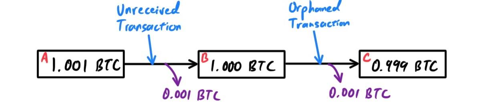
There is a limit to the number of orphan transactions stored in memory, to prevent a denial-of-service attack against bitcoin nodes. The limit is defined as
MAX_ORPHAN_TRANSACTIONS in the source code of the bitcoin reference client. If the number of orphan transactions in the pool exceeds MAX_ORPHAN_TRANSACTIONS, one or more randomly selected orphan transactions are evicted from the pool, until the pool size is back within limits.
Locking/Unlocking Scripts and Script Language
[Hide]- A locking script, also called a
scriptPubKeyis an encumbrance placed on an output, and it specifies the conditions that must be met to spend the output in the future. - An unlocking script, also called
scriptSig, is a script that solves/satisfies the conditions placed on an output by a locking script and allows the output to be spent. Unlocking scripts are part of every transaction input, and most of the time they contain a digital signature produced by the user’s wallet from his or her private key.
Script Language
Bitcoin's scripting language is called a stack-based language because it uses a very simple data structure called a stack (which can be visualized as a stack of cards) with two operations:- push adds an item on top of the stack
- pop removes the top item from the stack
OP_ADDpops two items from the stack, adds them, and push the resulting sum onto the stack.OP_SUBpops two items from the stack, subtracts the second from the first number, and pushes the resulting difference onto the stack.OP_EQUALis a conditional operator that pops two items from the stack and pushesTRUE(represented by1) if they are equal orFALSE(represented by0) if they are not equal.
TRUE.
2 7 OP_ADD 3 OP_SUB 1 OP_ADD 7 OP_EQUAL
Standard Transactions
[Hide]isStandard() defining 5 types of "standard" transactions:
- Pay to Public Key Hash (P2PKH)
- Public Key
- Multi-Signature (limited to 15 keys)
- Pay to Script Hash (P2SH)
- Data Output (OP_RETURN)
Pay-to-Public-Key-Hash (P2PKH)
The vast memory of transactions processed on the bitcoin network are P2PKH transactions. In P2PKH transactions, the locking scripts that restrict these UTXOs are hashes of public keys of the recipient, i.e. the recipient address (A = SHA160(K)). The locking script is of the form:
OP_DUP OP_HASH160 <Public Key Hash> OP_EQUAL OP_CHECKSIGThese "locks" can be unlocked by the unlocking script, which is the pair consisting of
- the recipient signature (which can only be produced by the recipient private key), and
- the recipient public key
<Recpiient Signature> <Recipient Public Key>The two scripts together would form the combined validation script:
<Recipient Signature> <Recipient Public Key > OP_DUP OP_HASH160 <Recipient Public Key Hash> OP_EQUAL OP_CHECKSIGWhen executed, this combined script will evaluate to
TRUE if and only if the unlocking script matches the conditions set by the locking script, i.e. if the unlocking script has a valid signature from the cafe's private key that corresponds to the public key hash set as an encumbrance. The step-by-step execution of the combined script
<sig> <PubK> DUP HASH160 <PubKHash> EQUALVERIFY CHECKSIGis described below:
- The value
<sig>is pushed to the top of the stack.
<sig> ← <sig> <PubK> DUP HASH160 <PubKHash> EQUALVERIFY CHECKSIG
<PubK> is pushed to the top of the stack, on top of <sig>
<PubK> ← <sig> <PubK> DUP HASH160 <PubKHash> EQUALVERIFY CHECKSIG <sig>
DUP operator duplicates the top item in the stack, and the resulting value is pushed to the top of the stack.
<PubK> ← <sig> <PubK> DUP HASH160 <PubKHash> EQUALVERIFY CHECKSIG <PubK> <sig>
HASH160 operator hashes the top item in the stack with HASH126(PubK). The resulting value <PubKHash> is pushed to the top of the stack.
<PubKHash> ← <sig> <PubK> DUP HASH160 <PubKHash> EQUALVERIFY CHECKSIG <PubK> <sig>
PubKHash from the script is pushed on top of the value PubKHash calculated previously from the HASH160 of the PubK.
<PubKHash> ← <sig> <PubK> DUP HASH160 <PubKHash> EQUALVERIFY CHECKSIG <PubKHash> <PubK> <sig>
EQUALVERIFY operator compares the PubKHash encumbering the transaction with the PubKHash calculated from the user's PubK. If they match, both are removed and execution continues.
<PubK> ← <sig> <PubK> DUP HASH160 <PubKHash> EQUALVERIFY CHECKSIG <sig>
CHECKSIG operator checks that the signature <sig> matches the public key <PubK> and pushes TRUE to the top of the stack if true.
TRUE ← <sig> <PubK> DUP HASH160 <PubKHash> EQUALVERIFY CHECKSIG
Pay-to-Public-Key (P2PK)
Pay-to-public key is a simpler form of bitcoin payment that P2PKH. With this script form, the public key itself is stored in the locking scripts rather than the public-key hash as with P2PKH. P2PK was invented by Satoshi to make bitcoin addresses shorter for ease of use, but is mainly outdated. The locking script is of form:<Public Key A> OP_CHECKSIGand the corresponding unlock script is of form:
<Signature from Private Key>The two scripts together would form the combined validation script:
<Signature from Private Key> <Public Key> OP_CHECKSIGThe step-by-step execution of the combined script
<sig> <PubK> CHECKSIGis described below:
- The value
<sig>is pushed to the top of the stack.<sig> ← <sig> <PubK> DUP HASH160 <PubKHash> EQUALVERIFY CHECKSIG
- The execution continues, and the value
<PubK>is pushed to the top of the stack, on top of<sig><PubK> ← <sig> <PubK> DUP HASH160 <PubKHash> EQUALVERIFY CHECKSIG <sig>
- The
CHECKSIGoperator checks that the signature<sig>matches the public key<PubK>and pushesTRUEto the top of the stack if true.TRUE ← <sig> <PubK> DUP HASH160 <PubKHash> EQUALVERIFY CHECKSIG
Multi-Signature
Multi-signature scripts set a condition where N public keys are recorded in the script and at least M of those scripts must provide signatures to release the encumbrance, known as an M-of-N scheme. Note that there is an inherent limit on how many public keys N there can be in a multisig script (with clearly M<N). The general form of a M-of-N multisig locking script is:M <Public Key 1> <Public Key 2> ... <Public Key N> N OP_CHECKMULTISIGWith an unlocking script of form:
OP_0 <Signature 1> ... <Signature M>For example, the locking and unlocking scripts together of a 2-to-3 multisig scheme is of form
OP_0 <Signature B> <Signature C> 2 <Public Key A> <Public Key B> <Public Key C> 3 OP_CHECKMULTISIGWhen executed, this combined script will evaluate to
TRUE if and only if the unlocking script matches the conditions set by the locking script.
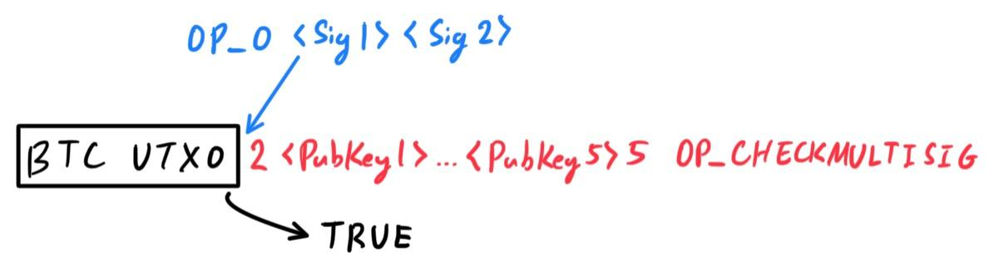Data Output (OP_RETURN)
Bitcoin's distributed and timestamp ledger, the blockchain, has potential uses far beyond payments, such as digital notary services, stock certificates, and smart contracts. Early attempts to use bitcoin’s script language for these purposes involved creating transaction outputs that recorded data on the blockchain; for example, to record a digital fingerprint of a file in such a way that anyone could establish proof-of-existence of that file on a specific date by reference to that transaction.The use of bitcoin's blockchain to store data unrelated to bitcion payments is a controversial subject, since the inclusion of non-payment data in bitcoin's blockchain causes a "blockchain bloat", burdening those running full bitcoin nodes with carrying the cost of disk storage for data that the blockchain was not intended to carry. Moreover, such transactions create UTXO that cannot be spent, using the destination bitcoin address as a free-form 20-byte field. Because the address is used for data, it doesn’t correspond to a private key and the resulting UTXO can never be spent; it’s a fake payment. This practice causes the size of the in-memory UTXO set to increase and these transactions that can never be spent are therefore never removed, forcing bitcoin nodes to carry these forever in RAM, which is far more expensive.
In version 0.9 of the Bitcoin Core client, a compromise was reached with the introduction of the
OP_RETURN operator. OP_RETURN allows developers to add 40 bytes of nonpayment data to a transaction output. However, unlike the use of “fake” UTXO, the OP_RETURN operator creates an explicitly provably unspendable output, which does not need to be stored in the UTXO set. OP_RETURN outputs are recorded on the blockchain, so they consume disk space and contribute to the increase in the blockchain’s size, but they are not stored in the UTXO set and therefore do not bloat the UTXO memory pool and burden full nodes with the cost of more expensive RAM. OP_RETURN scripts look like this:
OP_RETURN <data>The data portion is limited to 40 bytes and most often represents a hash, such as the output from the
SHA256 algorithm (32 bytes). Many applications put a prefix in front of the data to help identify the application. For example, the Proof of Existence digital notarization service uses the 8-byte prefix DOCPROOF, which is ASCII encoded as 44f4350524f4f46 in hexadecimal.
Keep in mind that there is no “unlocking script” that corresponds to
OP_RETURN that could possibly be used to “spend” an OP_RETURN output. The whole point of OP_RETURN is that you can’t spend the money locked in that output, and therefore it does not need to be held in the UTXO set as potentially spendable—OP_RETURN is provably un-spendable. OP_RETURN is usually an output with a zero bitcoin amount, because any bitcoin assigned to such an output is effectively lost forever. If an OP_RETURN is encountered by the script validation software, it results immediately in halting the execution of the validation script and marking the transaction as invalid. Thus, if you accidentally reference an OP_RETURN output as an input in a transaction, that transaction is invalid.
Pay-to-Script-Hash (P2SH)
To motivate this example, let us first describe some limitations of the P2PK multi-sig. Say that my company uses a multi-sig script for all customer payments, meaning that any payments made by customers are locked in such a way that they require at least 2 signatures to releaese, from me and one of my partners/attorney. This kind of scheme offers corporate governance controls and protects against theft, embezzlement, or loss. To give an example, say that there is a transaction from customer A → Company that produces a UTXO of 1BTC. This UTXO would of course be locked by a multi-sig script of form2 <my PubK> <Partner1 PubK> <Partner2 PubK> <Partner3 PubK> <Attorney PubK> 5 OP_CHECKMULTISIGEven though multi-sig scripts are a powerful feature, they are cumbersome to use, since I would have to communicate this script to every customer prior to payment, each customer would have to create a special bitcoin wallet software, and the transaction sizes would be much larger (with more public keys added to the locking script). The burden of that extra-large transaction would be borne by the customer in the form of fees. Finally, a large transaction script like this would be carried in the UTXO set in RAM in every full node until it was spent. To resolve these issues, pay-to-script-hash (P2SH) was developed.
The key characteristic of P2SH payments is that the complex locking script (in this context referred as the redeem script) is replaced with its digital fingerprint, a cryptographic hash. When a transaction attempting to spend the UTXO is presented later, it must contain the script that matches the hash, in addition to the unlocking script. The following table shows a complex script without P2SH
| Locking Script | 2 PubKey1 PubKey2 PubKey3 PubKey4 PubKey5 5 OP_CHECKMULTISIG |
|---|---|
| Unlocking Script | Sig1 Sig2 |
| Redeem Script | 2 <PubKey1> <PubKey2> <PubKey3> <PubKey4> <PubKey5> 5 OP_CHECKMULTISIG |
|---|---|
| Locking Script | OP_HASH160 <20-byte hash of redeem script> OP_EQUAL |
| Unlocking Script | <Sig1> <Sig2> <Unlocking Redeem Script> |
- Given a transaction from a customer to the company, the transaction UTXO, which would originally be locked with the P2PSH script, referred to this as the original redeem script (which would be a very long script when converted to hex),
2 <PubKey1> <PubKey2> <PubKey3> <PubKey4> <PubKey5> 5 OP_CHECKMULTISIG
is in fact locked with the shortened form (called the hash of the redeem script)OP_HASH160 <20-byte hash of redeem script> OP_EQUAL
- When I (the CEO of the company) want to spend this UTXO, I must present an unlocking redeem script (which should match the original redeem script) and the signatures necessary to unlock it, like this:
<Sig1> <Sig2> <Unlock Redeem Script>
- The two scripts are combined in two stages. First, the redeem script is checked against the locking script ot make sure the hash matches:
<original redeem script> OP_HASH160 <20-byte hash of redeem script> OP_EQUAL
- If the redeem script hash matches, the unlocking script is executed on its own, to unlock the redeem script:
<Sig1> <Sig2> <Original Redeem Script>
which is really<Sig1> <Sig2> 2 <PubKey1> <PubKey2> <PubKey3> <PubKey4> <PubKey5> 5 OP_CHECKMULTISIG
The Bitcoin Network
[Hide]- Full Blockchain nodes, also called full nodes, refer to nodes that maintain a complete and up-to-date copy of the bitcoin blockchain with all the transations, which they independently build and verify, starting with the very first block and building up to the latest known block in the network.
- SPV nodes, or lightweight nodes, contain a subset of the blockchain and can verify transactions using a method called simplified payment verification (SPV).
- Routing functions are contained in every node in order to participate in the network.
- Mining nodes compete to create new blocks by running specialized hardware to solve the proof-of-work algorithm. Some mining nodes are also full nodes while others are lightweight nodes participating in pool mining and dependeing on a pool server to maintain a full node.
- User wallets might be part of a full node, as is usually the case with desktop bitcoin clients. Increasingly, many user wallets, especially those running on resource-constrained devices such as smartphones, are SPV nodes.
addr (address) message containg its own IP address to its neighbors, who will then forward it to its neighborhods to ensure that the new node is better connected. The handshakes allow each node to exchange their version, which contains the following information:
"addr" : "85.213.199.39:8333", "services" : "00000001", "lastsend" : 1405634126, "lastrecv" : 1405634127, "bytessent" : 23487651, "bytesrecv" : 138679099, "conntime" : 1405021768, "pingtime" : 0.00000000, "version" : 70002, "subver" : "/Satoshi:0.9.2.1/", "inbound" : false, "startingheight" : 310131, "banscore" : 0, "syncnode" : trueAdditionally, the newly connected node can send getaddr to the neighbors, asking them to return a list of IP addresses of other peers. This way, a node can advertise its existence on the network for other nodes to find it. This entire process is called bootstrapping.
Full Nodes vs Simplified Payment Verification (SPV) Nodes
In the early days of bitcoin, every node was a full node. Running a full blockchain node lets you independently verify all transactions without the need to rely on any other systems. As of October 2021, the entire blockchain was about 360GB. The first thing a full node will do once it connects to peers is try to construct a complete blockchain. If it is a brand-new node and has no blockchain at all, it only knows one block, the genesis block, which is statically embedded in the client software. We describe the steps of the blockchain catching up:- A node joins the bitcoin network. This could be a brand-new node, or a node that had been offline for a while and needs to catch up. It bootstraps to the network and sends/receives the version message between its peers. This version message contains the "BestHeight" variable, which tells a node's current blockchain height (number of blocks). Peered nodes will see each other's version and BestHeight variables and compare how many blocks they each have. These peered nodes will exchange a "getblocks" message that compares the top block on their local blockchain.
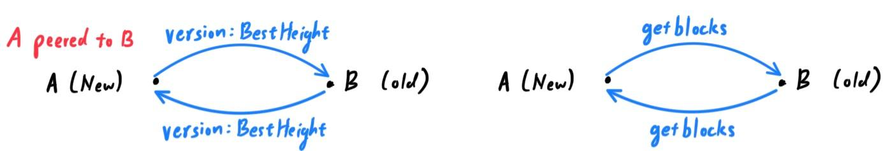 - The old node will send the new node an "inv" message, which tells the new node which blocks must be exchanged for it to catch up. Upon receiving this inv message, the newer node issues a series of "getdata" messages requesting the full block data and identifying the requested blocks using the hashes from the inv message.
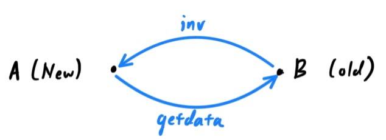 - This is all done in a controlled manner by sending 500 blocks at a time all spread out among peers as avoid overwhelming the network with requests. This process continues until the node catches up with the rest of the network.
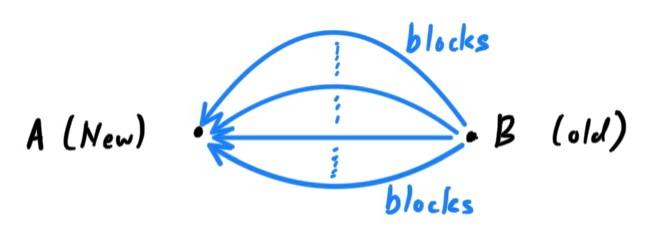
- When examining a new transaction in block 300,000, a full node links all 300,000 blocks down to the genesis block and builds a full database of UTXO, establishing the validity of the transaction by confirming that the UTXO remains unspent.
- An SPV node cannot validate whether the UTXO is unspent and will instead establish a link between the transaction and the block that contains it using merkle paths (which is an efficient verficitation algorithm of the contents of large data structures). Each block in the bitcoin blockchain contains a summary of all the transactions in the block using a merkle tree. Then, the SPV node waits until it sees six additional blocks 300,001~300,006 (these 6 blocks could be existing ones or ones that are now being created) piled on top of the block (in order to make sure that a false blockchain is not being created) and verifies the new transaction in block 300,000 by establishing its depth under blocks 300,006 to 300,001. The fact that other nodes on the network accepted block 300,000 and then did the necessary work to produce six more blocks on top of it is proof, by proxy, that the transaction was not a double-spend. An SPV node cannot be persuaded that a transaction exists in a block when the transaction does not in fact exist. The SPV node establishes the existence of a transaction in a block by requesting a merkle path proof and by validating the proof of work in the chain of blocks.
Transaction Pools
Almost every node on the bitcoin network maintains two temporary separate lists stored in local memory and not saved on persistent storage, along with maybe one more:- The orphan pool contains transactions without a parent.
- The transaction pool contains unconfirmed transactions. For example, a node that holds a user’s wallet will use the transaction pool to track incoming payments to the user’s wallet that have been received on the network but are not yet confirmed.
- The UTXO pool (maintained by some implementations of the bitcoin client) contains millions of entries of unspent transaction outputs, including some dating back to 2009. It may be housed in local memory or as an indexed databased table on persistent storage.
- The transaction and orphan pools represents a single node's local perspective and might vary significantly, while the UTXO pool represents the emergent consensus of the network and will therefore vary little between nodes.
- The transaction and orphan pools only contain unconfirmed transactions, while the UTXO pool only contains confirmed outputs.
Alert Messages
Alert messages are a seldom used function, but are nevertheless implemented in most nodes as bitcoin's "emergency broadcast system." It is a means by which the core bitcoin developers can send an emergency text message to all bitcoin nodes of perhaps some serious problem in the bitcoin network, most notably in early 2013 when a critical database bug caused a multiblock fork to occur in the bitcoin blockchain. They are also cryptographically signed by a public key, with the corresponding private key held by few select members of the core development team. Each node receiving this alert message will verify it, check for expiration, and propagate it to all its peers, thus ensuring rapid propagation across the entire network.The Blockchain
[Hide]| Block Size (4B) Size of the block, in bytes, following this field | Block Size (4B) |
| Block Header (80B) Several fields form the block header | Version (4B) A version number to track software/protocol upgrades |
| Previous Block Hash (32B) A reference to the hash of the previous (parent) block in the chain | |
| Merkle Root (32B) A hash of the root of the merkle tree of this block’s transactions | |
| Timestamp (4B) The approximate creation time of this block (seconds from Unix Epoch) | |
| Difficulty Target (4B) The proof-of-work algorithm difficulty target for this block | |
| Nonce (4B) A counter used for the proof-of-work algorithm | |
| Transaction Counter (1~9B) How many transactions follow | Transaction Counter (1~9B) |
| Transactions (Var) The transactions recorded in this block |
Block Header
A block header consists of three sets of block metadata.- The reference to the previous block hash, which connects this block to the previous block in the blockchain.
- The set (difficulty, timestamp, nonce) relate to the mining competition, which will be elaborated later.
- The third set is the merkle tree root, a data structure used to efficiently summarize all the transactions in the block.
32-byte Block Hash = SHA256(SHA256(80-byte block header))The resulting 32-byte hash is called the block hash, but more accurately called the block header hash, because only the block header is used to compute it. The block hash identifies a block uniquely and unambiguously and can be independently derived by any node by simply hashing the block header. For example, the following hash is the block hash of the genesis block, along with other variables:
"hash" : "000000000019d6689c085ae165831e934ff763ae46a2a6c172b3f1b60a8ce26f",
"confirmations" : 308321,
"size" : 285,
"height" : 0,
"version" : 1,
"merkleroot" : "4a5e1e4baab89f3a32518a88c31bc87f618f76673e2cc77ab2127b7afdeda33b",
"tx" : [
"4a5e1e4baab89f3a32518a88c31bc87f618f76673e2cc77ab2127b7afdeda33b"
],
"time" : 1231006505,
"nonce" : 2083236893,
"bits" : "1d00ffff",
"difficulty" : 1.00000000,
"nextblockhash" : "00000000839a8e6886ab5951d76f411475428afc90947ee320161bbf18eb6048"
Note that the block hash is not actually included inside the block's data structure, neither when the block is transmitted on the network, nor when it is stored on a node’s persistence storage as part of the blockchain. Instead, the block’s hash is computed by each node as the block is received from the network. The block hash might be stored in a separate database table as part of the block’s metadata, to facilitate indexing and faster retrieval of blocks from disk.
A second way to identify a block is by its position in the blockchain, called the block height. Therefore, a block can thus be identified in two ways: by referencing the block hash or by referencing the block height. The block hash is a unique identifier, but the block height may not always be unique due to blockchain forks, when two or more blocks having the same block height compete for the same position in the blockchain. The block height is also not a part of the block’s data structure; it is not stored within the block. Each node dynamically identifies a block’s position (height) in the blockchain when it is received from the bitcoin network. The block height might also be stored as metadata in an indexed database table for faster retrieval.
Linking Blocks in the Blockchain
Given a full node that contains the current blockchain, the node will know the block header, and therefore the block hash, of the top block. As the node receives an incoming block from the network, it will validate the block by looking at the incoming block header's previous block hash. If the previous block hash matches the current top block hash already in the local blockchain, then the node adds this new block to the end of the chain, making the blockchiain longer.For example, assume that a full node has 277,314 blocks in the local copy of the blockchain, with the top block header hash of
00000000000000027e7ba6fe7bad39faf3b5a83daed765f05f7d1b71a1632249The bitcoin node then receives a new block from the network, which is parses as follows:
"size" : 43560,
"version" : 2,
"previousblockhash" :
"00000000000000027e7ba6fe7bad39faf3b5a83daed765f05f7d1b71a1632249",
"merkleroot" :
"5e049f4030e0ab2debb92378f53c0a6e09548aea083f3ab25e1d94ea1155e29d",
"time" : 1388185038,
"difficulty" : 1180923195.25802612,
"nonce" : 4215469401,
"tx" : [
"257e7497fb8bc68421eb2c7b699dbab234831600e7352f0d9e6522c7cf3f6c77",
#[... many more transactions omitted ...]
"05cfd38f6ae6aa83674cc99e4d75a1458c165b7ab84725eda41d018a09176634"
]
The new block's "previousblockhash" field contains the hash of its parent block, which is already known to the node, that of the last block on the chain at height 277,314. Therefore, this new block is a child of the last block on the chain and extends the existing blockchain.
Merkle Trees
Each block in the bitcoin blockchain contains a summary of all the transactions in the block, using a merkle tree, or a binary hash tree. It is data structure where each node branches into two (hence the name binary) and containing cryptographic hashes (hence the name hash). Merkle trees provide a very efficient process to verify whether a transaction is included in a block. A Merkle tree is constructed by recursively hashing pairs of nodes until there is only one hash, called the root, or merkle root. The cryptographic hash algorithm used in bitcoin’s merkle trees isSHA256 applied twice, also known as double-SHA256. The time to parse a Merkle tree with N elements is O(log2 N)
, which is extremely good.To show how this merkle tree structure of transactions are formed, let us start with a block that must encode in it 4 transactions A, B, C, D.
- The transactions themselves are not stored in the merkle tree; rather, their data is double-hashed and the resulting hash is stored in each leaf node as HB, HB, HC, HD:
H~A~ = SHA256(SHA256(Transaction A))
- Consecutive pairs of leaf nodes are then summarized in a parent node, by concatenating the two hashes and hashing them together. For example, the parent node HAB is created as:
H~AB~ = SHA256(SHA256(H~A~ + H~B~))
- This process continues until there is only one node at the top, the node known as the Merkle root. This 32-byte hash is stored in the block header and summarizes all the data in all four transactions. 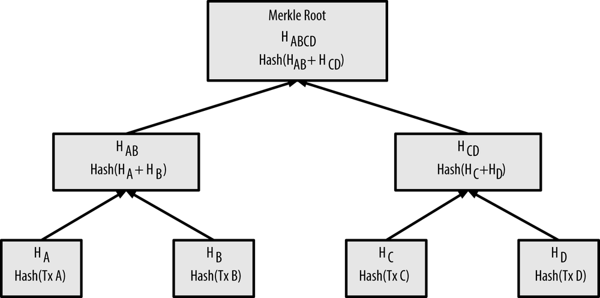
- This can clearly be used to construct trees of any size containing any number of transactions. If there are odd numbers of transactions to summarize at any level, then the last transaction hash will be duplicated to create an even number of leaf nodes, known as a balanced tree. 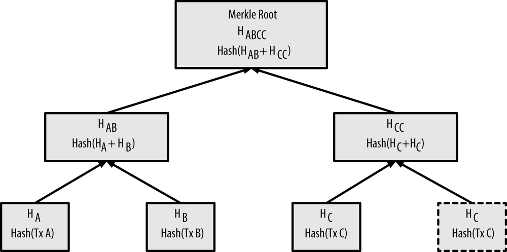
HL → HIJ → HMNOP → HABCDEFGH
With these four hashes provided as a path, any node can prove that HK (in green in the diagram) is included in the merkle root by computing four additional pair-wise hashes HKL, HIJKL, HIJKLMNOP, and the merkle tree root (outlined in a dotted line in the diagram).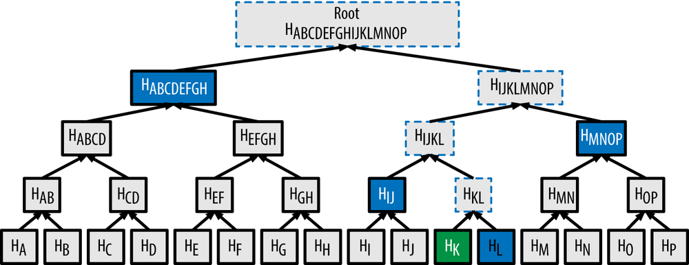
With merkle trees, a node can download just the block headers (80 bytes per block) and still be able to identify a transaction’s inclusion in a block by retrieving a small merkle path from a full node, without storing or transmitting the vast majority of the blockchain, which might be several gigabytes in size. Nodes that do not maintain a full blockchain, called simplified payment verification (SPV nodes), use merkle paths to verify transactions without downloading full blocks.
Mining and Consensus
[Hide]- Mining serves to secure the bitcoin system against fraudulent transactions or transactions spending the same amount of bitcoin more than once, known as a double-spend.
- Miners provide processing power to the bitcoin network in exchange for the opportunity to be rewarded bitcoin.
- Mining is the invention that makes bitcoin special, a decentralized security mechanism that is the basis for peer-to-peer digital cash. The reward of newly minted coins and transaction fees is an incentive scheme that aligns the actions of miners with the security of the network, while simultaneously implementing the monetary supply.
- Each block, generated on average every 10 minutes, contains entirely new bitcoins, created from nothing.
- Every 210,000 blocks (approx. 4 years), the currency issuance rate is decreased by 50%. The rate of new coins decreases like this exponentially over 64 "halvings" until block 13,230,000 (mined approx. in 2137), when it reaches the minimum currency unit of 1 satoshi. At slightly less than 21 million bitcoins, no more bitcoins will be issued.
- The finite and diminishing issuance creates a fixed monetary supply that resists inflation. Unlike a fiat currency, which can be printed in infinite numbers by a central bank, bitcoin can never be inflated by printing.
Mining Nodes & Aggregating Transactions into Blocks
A miner, or a mining node, is a specialized computer-hardware system connected to a server running a full bitcoin node designed to mine bitcoins.- Like every other full node, it receives, validates, and relays new, unconfirmed transactions on the bitcoin network. These transactions are added to the node's transaction pool, where they await until they can be mined into a block. It is always listening for new blocks, too.
- The miner immediately constructs a new empty block (say, the Nth block in the chain), called a candidate block. It takes the unconfirmed transactions that are in the pool, puts them in the candidate block, and tries to find a solution to the proof-of-work algorithm in order to make the block valid.
- If a new block is received before the miner can successfully solve the proof-of-work algorithm, this signifies the end of the competition for block N and the beginning of the competition to create block N+1. Upon receiving this block N and validating it, the miner will also check all the transactions in the transaction pool and remove any that were included in block N+1. Whatever transactions remain in the memory pool are unconfirmed and are waiting to be recorded in a new block.
- If the miner successfully solves the algorithm first, then it takes the unconfirmed transactions in the pool, puts it into the now valid block, and adds it to the blockchain. This new updated blockchain is propogated throughout the network, telling other nodes that this block is solved. With this, the miner node constructs the generation transaction, or coinbase transaction, which reprsents the mining reward. It consists of the newly minted bitcoins (6.25BTC in 2021) along with all the transaction fees (difference of all the outputs from all the inputs). Unlike other transactions, the generation transaction has a "coinbase" input rather than one specifying a previous UTXO to spend.
Constructing the Block Header & Difficulty Representation
To construct the block header, the mining node needs to fill in the following fields.| Version (4B) A version number to track software/protocol upgrades |
| Previous Block Hash (32B) A reference to the hash of the previous (parent) block in the chain |
| Merkle Root (32B) A hash of the root of the merkle tree of this block’s transactions |
| Timestamp (4B) The approximate creation time of this block (seconds from Unix Epoch) |
| Difficulty Target (4B) The proof-of-work algorithm difficulty target for this block |
| Nonce (4B) A counter used for the proof-of-work algorithm |
target = coefficient * 2^(8 * (exponent - 3))which gets, using 0x1903a30c,
target = 0x03a30c * 2^(0x08 * (0x19 - 0x03))
= 0x03a30c * 2^0xB0
= 0x0000000000000003A30C00000000000000000000000000000000000000000000
Which, in decimal, is
238,348 * 2^176 = 22,829,202,948,393,929,850,749,706,076,701,368,331,072,452,018,388,575,715,328Obviously, this is a really huge number, and we will find out what this means. For now, it is important to just know that this is a predetermined number representing the "difficulty" of completing the algorithm. Finally, the nonce is a variable that is initialized to 0.
Mining the Block & Proof-of-Work Algorithm
The miner constructs a candidate block filled with transactions and then constructs the header. Now, at this point, the nonce is initialized to 0, and the miner calculates the hash of this block's header to gethash0 = SHA256(Block Header with Nonce=0)and sees if it is smaller than the current target (target difficulty). If it is not, then the miner changes the Nonce to a different value out of the 232 (about 4 billion) ones to get a different hash. Usually, we would increment it by 1 to get the next hash:
hash1 = SHA256(Block Header with Nonce=1)Once the miner goes through billions and billions of hashes and finds a hash that is less than the target difficulty, the node has successfully solved the proof-of-work algorithm. Note that it is often the case that the miner can go through all 232 nodes and still not find a hash value that is less than the target. In this case, the mining node can take additional measures to refresh the nonce:
- The timestamp can be changed up to two hours in the future, which would change the header and therefore give a fresh new 4 billion new nonces to go through.
- The coinbase transaction, which can store 2~100 bytes of data, can be used as a source of extra nonce values. The coinbase transaction is included in the merkle tree, which means that any change in the coinbase script causes the merkle root to change.
BlockNHeaderM. Then, the mining node will compute the following:
BlockNHeader0 => a80a81401765c8eddee25df36728d732... BlockNHeader1 => f7bc9a6304a4647bb41241a677b5345f... BlockNHeader2 => ea758a8134b115298a1583ffb80ae629... BlockNHeader3 => bfa9779618ff072c903d773de30c99bd... BlockNHeader4 => bce8564de9a83c18c31944a66bde992f... BlockNHeader5 => eb362c3cf3479be0a97a20163589038e... BlockNHeader6 => 4a2fd48e3be420d0d28e202360cfbaba... BlockNHeader7 => 790b5a1349a5f2b909bf74d0d166b17a... BlockNHeader8 => 702c45e5b15aa54b625d68dd947f1597... BlockNHeader9 => 7007cf7dd40f5e933cd89fff5b791ff0... BlockNHeader10 => c2f38c81992f4614206a21537bd634a... BlockNHeader11 => 7045da6ed8a914690f087690e1e8d66... BlockNHeader12 => 60f01db30c1a0d4cbce2b4b22e88b9b... BlockNHeader13 => 0ebc56d59a34f5082aaef3d66b37a66... BlockNHeader14 => 27ead1ca85da66981fd9da01a8c6816... BlockNHeader15 => 394809fb809c5f83ce97ab554a2812c... BlockNHeader16 => 8fa4992219df33f50834465d3047429... BlockNHeader17 => dca9b8b4f8d8e1521fa4eaa46f4f0cd... BlockNHeader18 => 9989a401b2a3a318b01e9ca9a22b0f3... BlockNHeader19 => cda56022ecb5b67b2bc93a2d764e75f...For example, if the target was
0x1000000000000000000000000000000000000000000000000000000000000000then the winning nonce is 13, since it is the first nonce in which the BlockNHashM value was less than the target. Clearly, given the target, we just need a hash value that starts with a 0, which has a 1/16 chance of happening randomly. Furthermore, increasing the difficulty by 1 bit (or by 1 hex digit) causes an exponential increase in the time it takes to find a solution, more specifically by a factor of 2 (or by 16). This is why all bitcoin block hashes have a lot of zeroes in the beginning, meaning that the acceptable range of hashes is much smaller, hence it is more difficult to find a valid hash.
Difficulty Target and Retargeting
Note that the easiness, and thus the speed in which the proof-of-work algorithm is solved, is dependent on how small the target difficulty is. If we decrease the target, then the task of finding a hash that is less than the target becomes more difficult, and more importantly, this difficulty target is adjustable. Bitcoin's blocks are generated every 10 minutes, which underpins the frequency of currency issuance and the speed of transaction settlement. It must remain at a constant 10 minutes over many decades, adjusting to increased computing power and additional mining nodes/competition.This difficulty adjustion algorithm is quite simple: It readjusts the difficulty every 2016 blocks, which should have an expected computing time of 20,160 minutes (2 weeks). The ratio between the actual timespan and desired timespan is calculated and a corresponding adjustment (up or down) is made to the difficulty.
New Difficulty = Old Difficulty * (Actual Time of Last 2016 Blocks / 20160 minutes)
- If the actual time in the past 2016 blocks took longer than 2 weeks (meaning that the rate at which blocks are added to the blockchain is slower), then the new difficulty is increased from the old one to make the process easier.
- If the actual time of the past 2016 blocks took less than 2 weeks, then this means that blocks are added too fast and therefore the target must be decreased (making it more difficult).
Note that the target difficulty is independent of the number of transactions or the value of transactions, but it is dependent on market forces as new miners enter the market to compete for the reward. This means that the hashing power and electricity expended is not at all dependent on the number/value of transactions within a block, but rather how many miners there are in the network (which determines how hard the difficulty is).
Successfully Mining and Validating the Block
Once a mining node has found a nonce that produces a block hash that is less than the target, the node transmits the block (with the header containing the nonce) to all its peers. They receive, validate, and then propogate the new block, and as it ripples out across the network, each node adds it to its own copy of the blockchain. The mining nodes that receives and validated the block abandon their efforts to find a block at the same height and immediately start computing the next block in the chain.The node is validated through a long list of criteria that must all be met, some of which are:
- The block data structure is syntactically valid.
- The block header hash is less than the target difficulty (enforces the proof of work)
- The block timestamp is less than two hours in the future (allowing for time errors)
- The block size is within acceptable limits
- The first transaction (and only the first) is a coinbase generation transaction
- All transactions within the block are valid using the transaction checklist.
Blockchain Forks and Assembling Chains of Blocks
Nodes maintain three sets of blocks, shown below. Invalid blocks are rejected as soon as any one of the validation criteria fails.- The main blockchain is at any time whichever chain of blocks has the most cumulative difficulty associated with it. Under most circumatances this is also the chain with the most blocks in it, unless there are two equal-length chains and one has more proof of work.
- One or multiple secondary chains that form branches off the main block chain, due to forks. The main chain can have branches with blocks that are "siblings" to the blocks on the main chain. These blocks are valid but not part of the main chain. They are kept for future reference, in case one of those chains is extended to exceed the main chain in difficulty.
- Orphan blocks, which are blocks that do not have a known parent in the known (both main and secondary) chains. Orphan blocks are saved in the orphan block pool where they will stay until their parent is received. Once the parent is received and linked into the existing chains, the orphan can be pulled out of the orphan pool and linked to the parent, making it part of a chain. Orphan blocks usually occur when two blocks that were mined within a short time of each other are received in reverse order (child before parent).
Blocks might arrive and different nodes at different times, causing the nodes to have different perspectives of the blockchain. We look at the simplified diagram of bitcoin as a global network. A fork in the blockchain occurs whenever there are two candidate blocks competing to form the longest blockchain. This occurs under normal conditions whenever two miners solve the proof-of-work algorithm within a short period of time from each other. As both miners discover a solution for their respective candidate blocks, they immediately broadcast their own “winning” block to their immediate neighbors who begin propagating the block across the network. Each node that receives a valid block will incorporate it into its blockchain, extending the blockchain by one block. If that node later sees another candidate block extending the same parent, it connects the second candidate on a secondary chain. As a result, some nodes will “see” one candidate block first, while other nodes will see the other candidate block and two competing versions of the blockchain will emerge. This leads to two completely valid "versions" of the blockchain that is kept in each node. 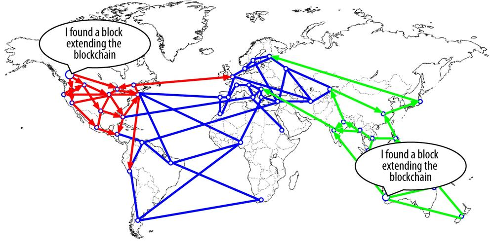 As the two blocks propogate, some nodes receive block "red" first and some receive block "green" first. Therefore, the network splits into two different perspectives of the blockchain, one side topped with a red block, the other with a green block. 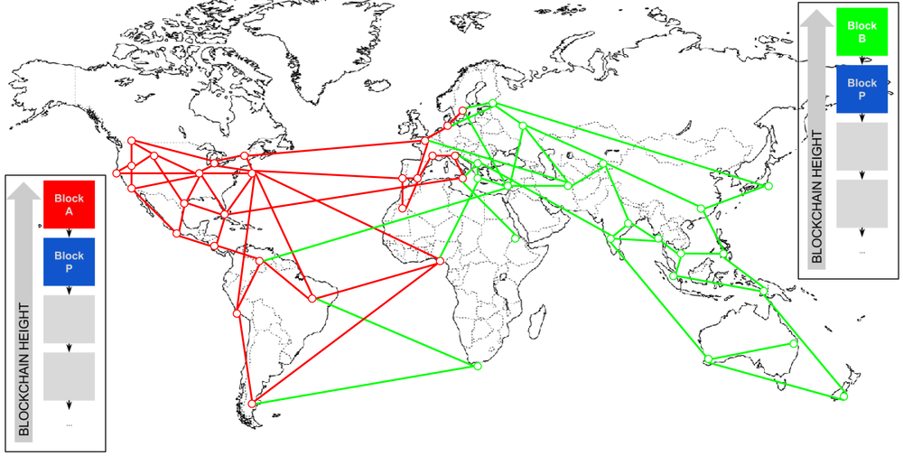 The bitcoin network nodes closest to the Canadian node will hear about block "red" first and create a main blockchain with "red" as the last block in the chain. Meanwhile, nodes closer to the Australian node will take that block as the winner and extend the blockchain with “green” as the last block (e.g., blue-green), ignoring “red” when it arrives a few seconds later. Any miners that saw “red” first will immediately build candidate blocks that reference “red” as the parent and start trying to solve the proof of work for these candidate blocks. The miners that accepted “green” instead will start building on top of “green” and extending that chain. Forks are almost always resolved within one block. As part of the network’s hashing power is dedicated to building on top of “red” as the parent, another part of the hashing power is focused on building on top of “green.” Even if the hashing power is almost evenly split, it is likely that one set of miners will find a solution and propagate it before the other set of miners have found any solutions. Let’s say, for example, that the miners building on top of “green” find a new block “pink” that extends the chain (e.g., blue-green-pink). They immediately propagate this new block and the entire network sees it as a valid solution. 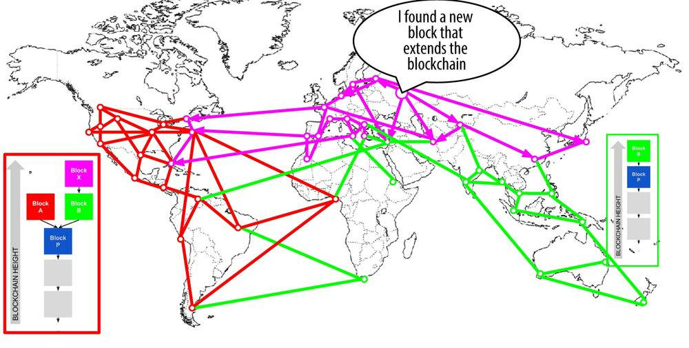 All nodes that had chosen “green” as the winner in the previous round will simply extend the chain one more block. The nodes that chose “red” as the winner, however, will now see two chains: blue-green-pink and blue-red. The chain blue-green-pink is now longer (more cumulative difficulty) than the chain blue-red. As a result, those nodes will set the chain blue-green-pink as main chain and change the blue-red chain to being a secondary chain, as shown in Figure 8-6. This is a chain reconvergence, because those nodes are forced to revise their view of the blockchain to incorporate the new evidence of a longer chain. Any miners working on extending the chain blue-red will now stop that work because their candidate block is an “orphan,” as its parent “red” is no longer on the longest chain. The transactions within “red” are queued up again for processing in the next block, because that block is no longer in the main chain. The entire network re-converges on a single blockchain blue-green-pink, with “pink” as the last block in the chain. All miners immediately start working on candidate blocks that reference “pink” as their parent to extend the blue-green-pink chain. 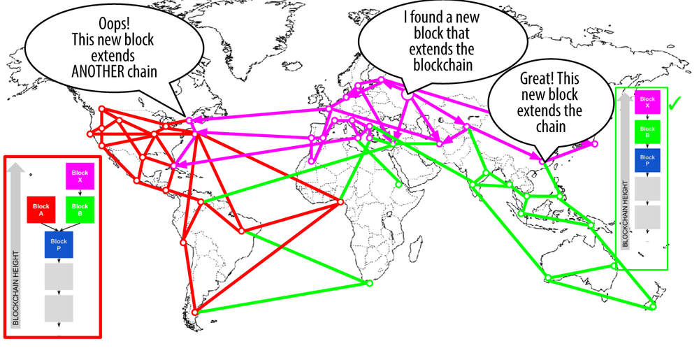 A one-block fork may be quite common, occuring once a week, but a fork that extends to two blocks (i.e. if two blocks are found almost simultaneously by miners on opposite sides of a previous fork) is extremely rare. Bitcoin’s block interval of 10 minutes is a design compromise between fast confirmation times (settlement of transactions) and the probability of a fork. A faster block time would make transactions clear faster but lead to more frequent blockchain forks, whereas a slower block time would decrease the number of forks but make settlement slower.
The Hashing Race and Mining Pools
The hash rate is a key measuring unit (and security metric) of the processing power of the Bitcoin network, generally represented in hashes per second. The more hashing power in the network, the greater its security and overall resistance to attack. Although bitcoin's exact hashing power is unknown, it is possible to estimate it from the number of blocks being mined and the current block difficulty. Daily numbers may periodically rise or drop as a result of the randomness of block discovery. A terahash, or Th, is 1 trillion hashes, and as of November 2021, the total hashrate of the entire bitcoin network is approximately 160m TH/s. The historical data (actually, the 30-day moving average) of the hash rate in Th/s in shown below. As the amount of hashing power applied to mining bitcoin has exploded, the difficulty has risen to match it, as shown below in the graph of the 30-day moving average.
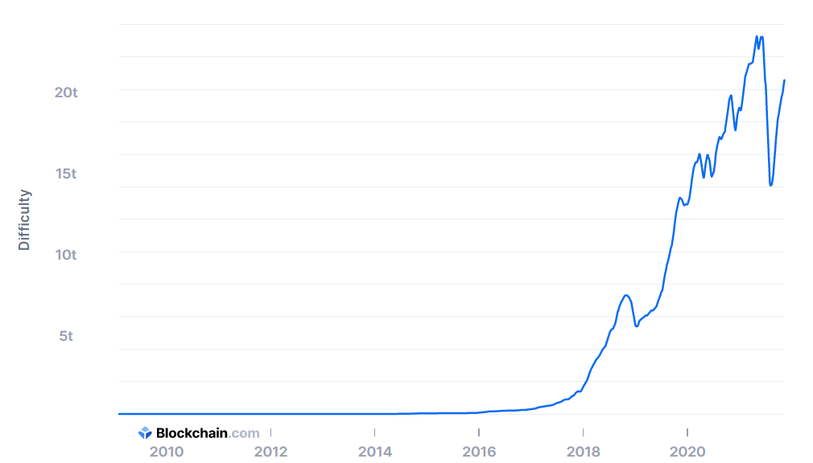
These bitcoins are mined using ASIC mining chips, which have increased in density over the years (i.e. how many chips can be squeezed into a building, while still dissipating the heat and providing adequate power).
As the amount of hashing power applied to mining bitcoin has exploded, the difficulty has risen to match it, as shown below in the graph of the 30-day moving average.
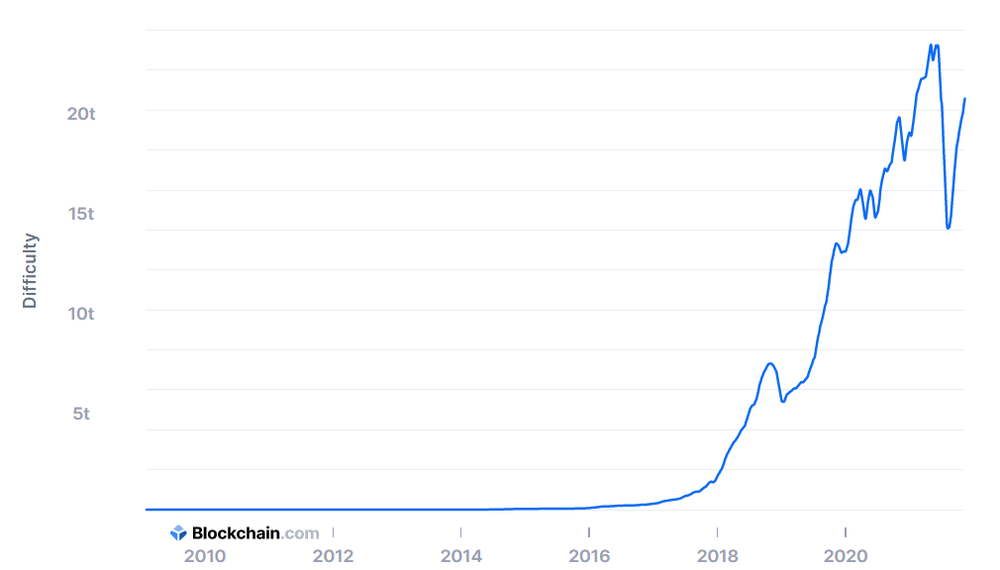
These bitcoins are mined using ASIC mining chips, which have increased in density over the years (i.e. how many chips can be squeezed into a building, while still dissipating the heat and providing adequate power). Because individual miners don't stand a chance, miners now collaborate to form mining pools, pooling their hashing power and sharing the reward among thousands of participants. They get a smaller share of the overall reward, but typically get rewarded every day, reducing uncertainty. Additionally, the ability to mine without running a full node is another big benefit of joining a pool. Mining pools coordinate many hundreds or thousands of miners, over specialized pool-mining protocols. The individual miners configure their mining equipment to connect to a pool server, after creating an account with the pool. Their mining hardware remains connected to the pool server while mining, synchronizing their efforts with the other miners. Thus, the pool miners share the effort to mine a block and then share in the rewards.
Mining pools coordinate hundreds/thousands of miners over specialized pool-mining protocols. The individual miners connect to the pool server while mining, synchronizing their efforts with the other miners. Thus, the pool miners share the effort to mine a block and then share in the rewards. Successful blocks pay the reward to a pool bitcoin address, rather than individual miners, and periodical payments are made to the miners' bitcoin addresses. Since most mining pools are managed by an individual or company, the pool operator may charge a small management fee for the pool-services.
Miners participating in a pool split the work of searching for a solution to a candidate block, earning “shares” for their mining contribution. The mining pool sets a lower difficulty target for earning a share, typically more than 1,000 times easier than the bitcoin network’s difficulty. As miners suceed in the easier difficulty target, they get more shares, and when someone in the pool successfully mines a block, the reward is earned by the pool and then shared with all miners in proportion to the number of shares they had. Pool miners connect to the pool server using a mining protocol such as Stratum (STM) or GetBlockTemplate (GBT). Both the STM and GBT protocols create block templates that contain a template of a candidate block header. The pool server constructs a candidate block by aggregating transactions, adding a coinbase transaction (with extra nonce space), calculating the merkle root, and linking to the previous block hash. The header of the candidate block is then sent to each of the pool miners as a template. Each pool miner then mines using the block template, at a lower difficulty than the bitcoin network difficulty, and sends any successful results back to the pool server to earn shares.
P2Pools and Consensus Attacks
Managed pools can be risky due to their single point of failure and the possibility for the pool manager to cheat (by directing the pool effort to doudble-spend transactions or invalidate blocks), which is why P2Pool, a new peer-to-peer mining pool without a central operator, was proposed and implemented in 2011.P2Pool works by decentralizing the functions of the pool server, implementing a parallel blockchain-like system called a share chain. A share chain is a blockchain running at a lower difficulty than the bitcoin blockchain. The share chain allows pool miners to collaborate in a decentralized pool, by mining shares on the share chain at a rate of one share block every 30 seconds. Each of the blocks on the share chain records a proportionate share reward for the pool miners who contribute work, carrying the shares forward from the previous share block. When one of the share blocks also achieves the difficulty target of the bitcoin network, it is propagated and included on the bitcoin blockchain, rewarding all the pool miners who contributed to all the shares that preceded the winning share block. Essentially, instead of a pool server keeping track of pool miner shares and rewards, they are kept track by a decentralized blockchain called the share chain (basically a mini-blockchain tracking shares within a pool server).
Participation in P2Pool has increased due to concerns of a 51% attack, a type of a consensus attack. A scenario of a 51% attack would play out as such: Assume that a group of miners, controlling a majority (51%) of the total network's hashing power, collude to attack bitcoin. With the ability to mine the majority of the blocks, the attacking miners can cause deliberate "forks" in the blockchain and double-spend transactions or execute denial-of-service attacks against specific transactions or addresses.
- A fork/double-spend attack is one where the attacker causes previously confirmed blocks to be invalidated by forking below them and re-converging on an alternate chain. With sufficient power, an attacker can invalidate six or more blocks in a row, causing transactions that were considered immutable (six confirmations) to be invalidated. Note that a double-spend can only be done on the attacker’s own transactions, for which the attacker can produce a valid signature. Double-spending one’s own transactions is profitable if by invalidating a transaction the attacker can get a nonreversible exchange payment or product without paying for it.
For example, asssume that entity A buys something from entity B for 10BTC. Once the transaction is confirmed in a block in the form "A pays B 10BTC," B hands over the product to A. Once receiving the product, A works with an accomplise, C, who operates a large mining pool, and C launches a 51% attack as soon as A's transaction is included in a block. C directs the mining pool to re-mine the same block height as the block containing A’s transaction, replacing the "A → B" with "A → A", a transaction that double-spends the same input as A’s payment. The double-spend transaction consumes the same UTXO and pays it back to A’s wallet, instead of paying it to B, essentially allowing A to keep the bitcoin. C then directs the mining pool to mine an additional block, so as to make the chain containing the double-spend transaction longer than the original chain (causing a fork below the block containing A’s transaction). When the blockchain fork resolves in favor of the new (longer) chain, the double-spent transaction replaces the original payment to B. Ultimately, B lost both the product and the BTC. 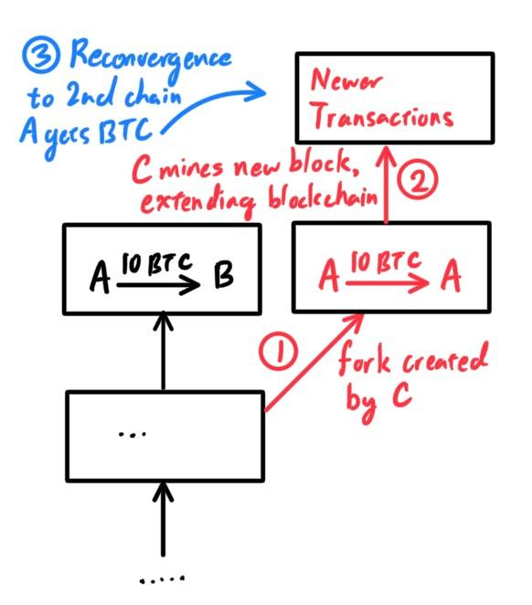 To protect against this kind of attack, a merchant selling large-value items must wait at least 6 confirmations before giving the product to the buyer. The more confirmations elapse, the harder it becomes to invalidate a transaction with a 51% attack. For high-value items, payment by bitcoin will still be convenient and efficient even if the buyer has to wait 24 hours for delivery, which would ensure 144 confirmations. - A denial-of-service attack is the other scenario for a consensus attack, which denies service to specific bitcion participants (their addresses). An attacker with a majority of the mining power can simply ignore specific transactions. If they are included in a block mined by another miner, the attacker can deliberately fork and re-mine that block, again excluding the specific transactions. This type of attack can result in a sustained denial of service against a specific address or set of addresses for as long as the attacker controls the majority of the mining power. 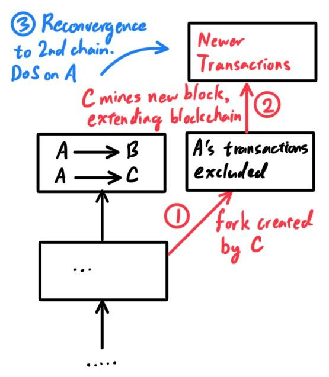
Extra
Note that addresses are just representations of entities (like email addresses). We can categorize them as such:- Legacy addresses are the original BTC addresses. Unfortunately, they are not SegWit compatible.
- SegWit (Segregated Witness) addresses are improved versions which reduces the size needed to store transactions in a block and so allows each block to have extra capacity to store more transactions per block. This leads to the network being able to process more transactions per block and the sender pays lower transaction fees. Additionally, SegWit addresses are backwards compatible, meaning that funds can be transferred from SegWit to Legacy (but not the other way around)
- Native SegWit addresses offers an even bigger block size and cheaper transactions than SegWit
- P2PKH (Pay to Public Key Hash) addresses are legacy addresses that start with a 1. This is Bitcoin's original address format and still works to this day. As the name suggests, this system has the sender pay to a hash of the recipient's public key. An example:
1BvBMSEYstWetqTFn5Au4m4GFg7xJaNVN2
- P2SH (Pay to Script Hash) (SegWit) addresses are structured similarly to P2PKH, but they have address that start with a 3 instead of a 1. They enable more functionality than legacy addresses. An example:
3J98t1WpEZ73CNmQviecrnyiWrnqRhWNLy
- Bech32 (native SegWit) addresses look distinctly different from P2-style addresses; each one starts with a "bc1" and is longer than others. An example:
bc1q7yjcjc75rm07a3n87hyf4kcpmrynqq352zfg7f
- P2PK (Pay to Public Key) is similar to P2PKH, but the difference is that it does not conceal your public key. Anyone using this method to send funds over the P2P network is showing everyone their public key in the transaction process.
- Hosted wallet means that a third-party keeps your crypto for you (such as coinbase), similar to how a bank keeps your money in a checking or savings account. The main benefit of keeping your crypto in a hosted wallet is if you forget your password, you won’t lose your crypto. A drawback to a hosted wallet is you can’t access everything crypto has to offer. This is what automatically happens when you create an account on a crypto brokerage.
- Non-custodial wallets (e.g. Coinbase Wallet or MetaMask), puts you in complete control of your crypto since they don't rely on a third-party, or a custodian, to keep your crypto safe. While they provide the software necessary to store your crypto, the responsibility of remembering and safeguarding your password falls entirely on you. If you lose or forget your password — often referred to as a “private key” or “seed phrase” — there’s no way to access your crypto. And if someone else discovers your private key, they’ll get full access to your assets.
- A hardware wallet is a physical device, like a thumb drive, that stores the private keys to your crypto offline. Most people don’t use hardware wallets because of their increased complexity and cost, but they do have some benefits — for example, they can keep your crypto secure even if your computer is hacked.